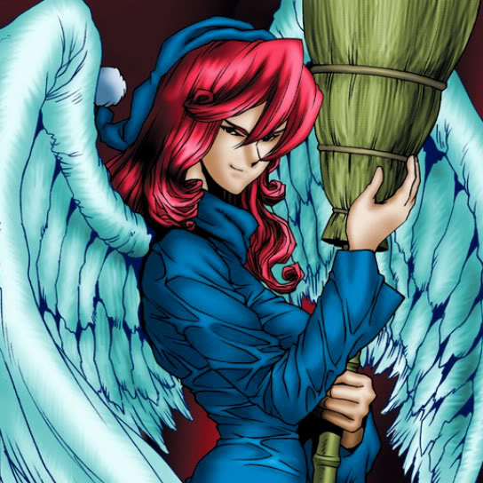

Witch's Apprentice

STATS
ATK: 550
DEF: 500DECK COST
Deck Cost per Card: 11Fusion List (8 Possible Fusions)
- Witch's Apprentice + Bean Soldier = Queen of Autumn Leaves
- Witch's Apprentice + Celtic Guardian = Dark Elf
- Witch's Apprentice + Dark Gray = Nekogal #2
- Witch's Apprentice + Dark Rabbit = Nekogal #2
- Witch's Apprentice + Firegrass = Queen of Autumn Leaves
- Witch's Apprentice + Hane-Hane = Nekogal #2
- Witch's Apprentice + Happy Lover = Dark Witch
- Witch's Apprentice + Snakeyashi = Queen of Autumn Leaves